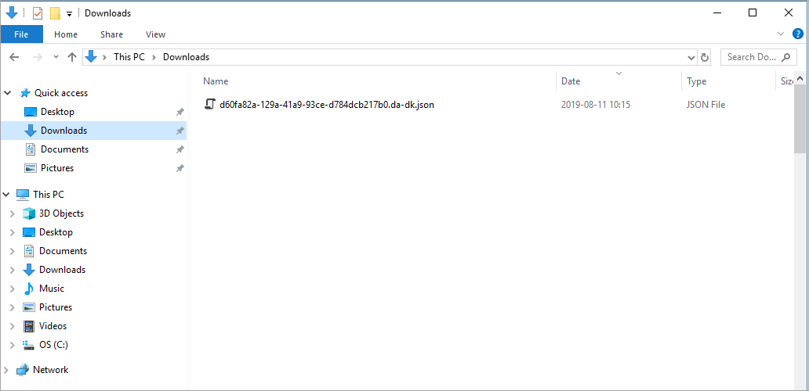

Localization¶
The localization editor is used to view translations of different labels in different languages, edit these translations, and export the translated labels.
For translation, or simply editing, of e-mail messages from Omnia, see this page for more information: Tokens in Omnia e-mails
View Mode: Use this list to select the output:

In order to view the labels that have yet not been translated, select have Missing Translation.
Omnia Service: Here we can select the part of omnia that we would like to view the labels of. If the purpose is translating labels, then each part needs to be translated, since each part has different labels:

When View Mode and Service has been selected, a list is shown. In this example everything in Web Content Management that don’t have a translation yet is listed.
You can point at the i-icon for information about which languages, of the available languages, are missing.

Language: Select language for the output here, from the available tenant languages. If the purpose is translating untranslated labels, then select both English and the language you wish to translate them to. This will assist the user in knowing more specifically what each label does:
Available languages are set up under Tenant-Settings-Regional settings, see: Regional settings
Export: When you have finished the settings, click this button to export to a file.

The texts that needs to be translated are now exported to a json file. The file is placed in the Downloads folder on your computer.
